Статьи о воде
Полезные материалы о качестве воды, очистке и здоровом образе жизни
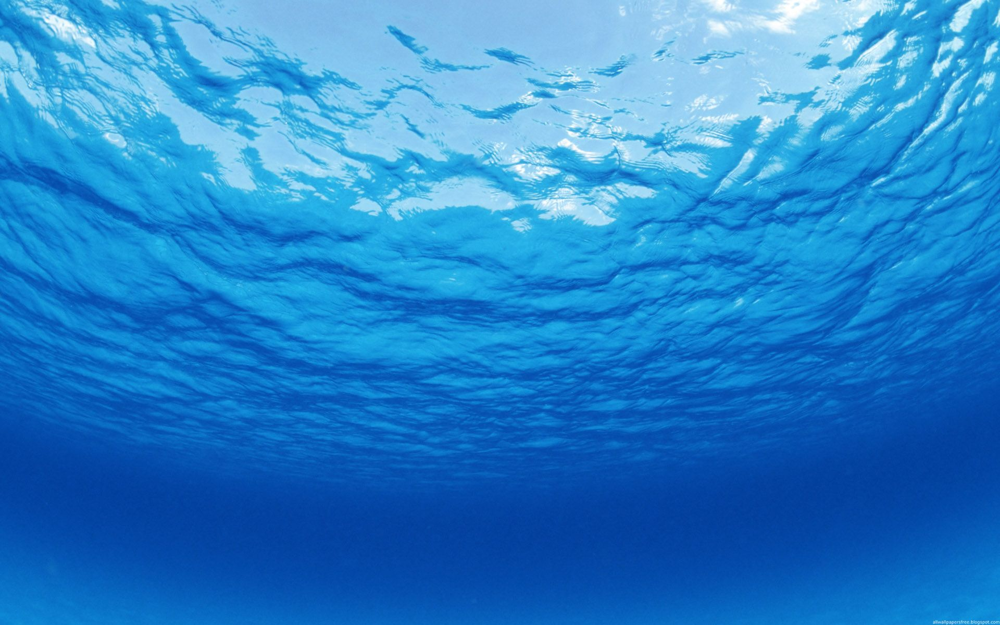
Бутилированная вода в рационе
Почему бутилированная вода — удобнее фильтра и водопровода
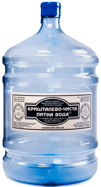
Вода оптом
Купить воду оптом в Броварах и Киеве от производителя
Доставка воды от производителя
Как выбрать компанию по доставке питьевой воды
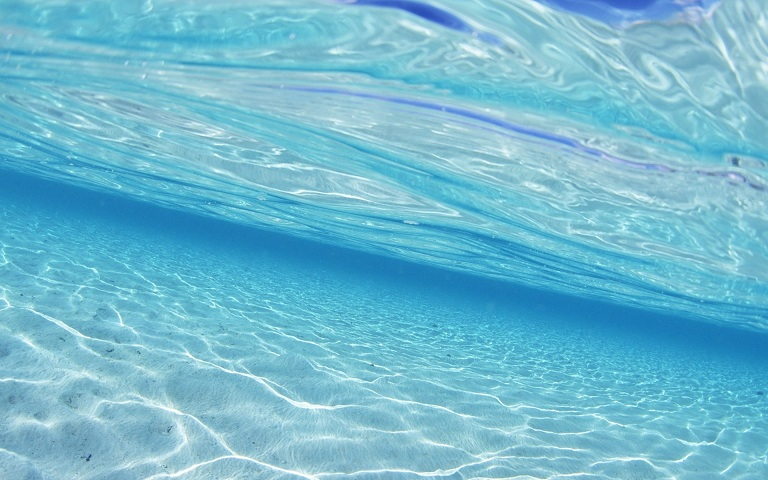
Какая вода нужна организму
Полезная и вредная вода для здорового организма
Очищенная вода
Как очищенная вода отличается от водопроводной
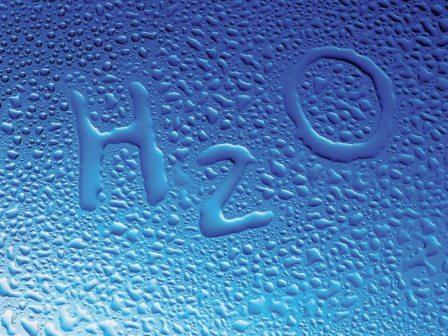
Вода для похудения
Ученые доказали — очищенная вода помогает худеть
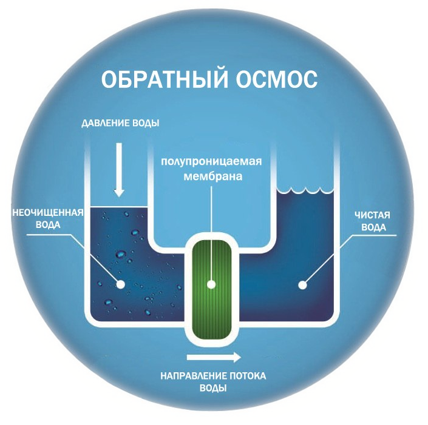
Умягчение воды
Процесс удаления солей жесткости из воды
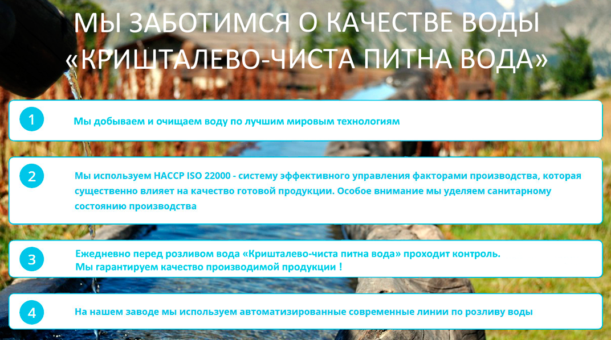
Вода без хлора
Как избавиться от хлора и получить чистую воду
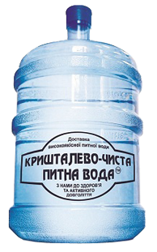
Вода в эко-таре
Как выбрать качественную тару для воды
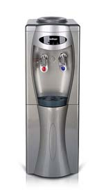
Вода для спортсменов
Почему питьевая вода — залог успеха в спорте
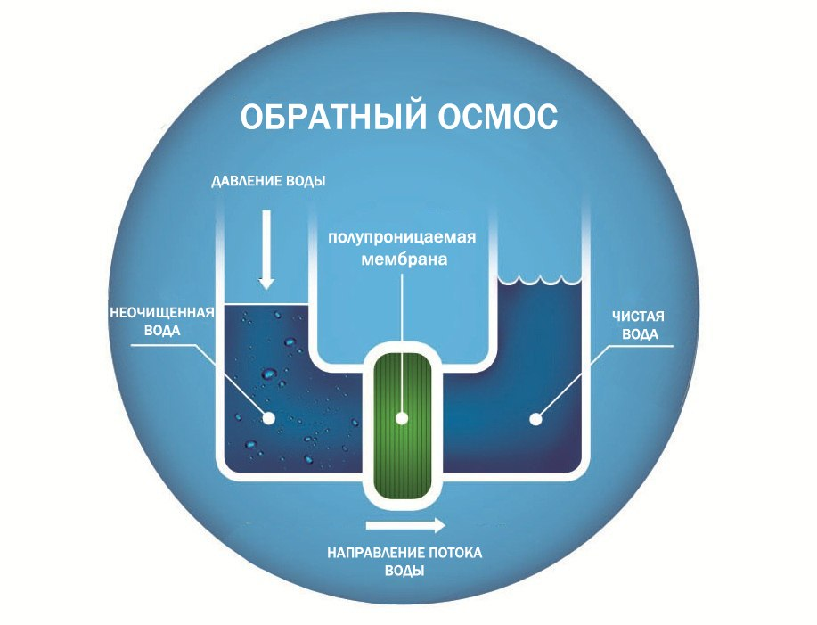
Обратный осмос
Что такое обратный осмос и как он очищает воду
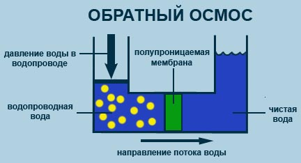
Озоновая стерилизация
Очищенная вода по системе озоновая стерилизация
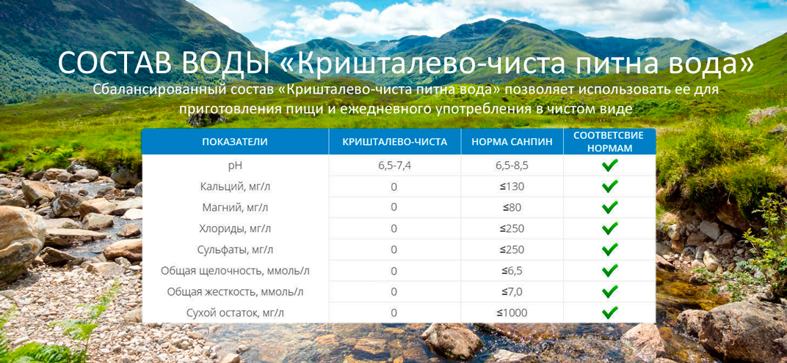
Вода и кальций
Влияние воды на кальций в организме
Причины пить воду
Важные причины регулярно пить очищенную воду
Осмос vs дистилляция
Отличие методов очистки воды

Значение воды в жизни
Почему вода так важна для человека
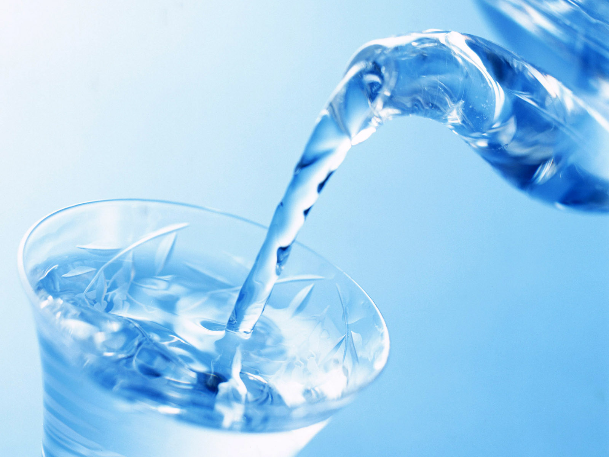
Виды воды на Земле
Какие виды воды существуют и чем они отличаются
Фильтры для воды
Какие фильтры использует Кришталево-чиста питна вода